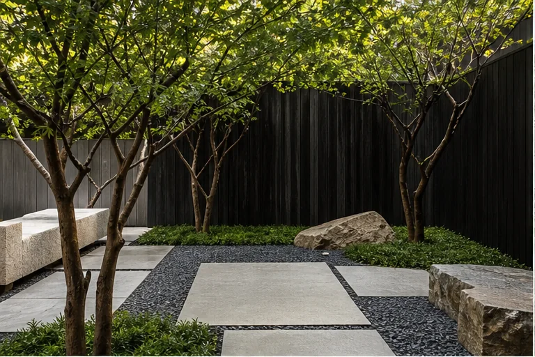
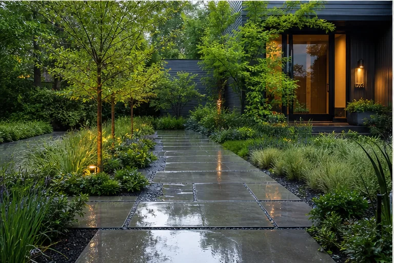

Arrival & Threshold
Front-yard scenarios often begin with clear movement, a legible entry, selective privacy, and a planting hierarchy that supports the architecture.
- Entry walk relationships
- Screening and openness
- Driveway and porch transitions
This gallery presents design directions and planning scenarios. Images are not represented as completed Verdeon client projects.
Concept collection
Use the filters to focus on a property type or planning layer.


Residential concepts
Front-yard scenarios often begin with clear movement, a legible entry, selective privacy, and a planting hierarchy that supports the architecture.
Backyard scenarios can coordinate active and quiet uses while preserving useful circulation and planting depth.
Featured concepts
Each scenario begins with a different functional question rather than a predefined style package.

How can shade, stone, gravel, and restrained planting create a calm internal landscape?
How can shared seating, circulation, planting, and city views support short visits and longer breaks?

How might water questions, path geometry, planting, and threshold lighting shape the approach?
How can outdoor dining, lounge, screening, and warm light feel connected without becoming overlit?
Commercial concepts
Internal landscapes may support pause, circulation, views from inside, and a quieter microclimate.
Public-facing spaces may balance identity, accessibility, visibility, seating, and durable planting.
3D visualization strip

Planning notes
Architecture, grade, climate, access, and existing landscape should shape the direction.
Furniture, paths, planting growth, clearances, and viewing distance change how ideas feel.
Engineering, construction, code, utility, and installation details require qualified professionals.
Move from inspiration to context
Share the site, priorities, and questions behind the images that caught your attention.